Dan Isaac Wallin
Svensk kunstfotograf, der bruger storformatkameraer og vintage polaroidkameraer til sine værker — mange af dem hænger som plakater i hjem verden over.
danisaacwallin.comOm 32 dage · uge 42, 12.–18. oktober 2026
12.–18. oktober 2026
Hvad er Instant Ugen?
Kort fortalt er Instant Ugen en hyldest til instant-fotografering — en opfordring til at udforske instant-fotografiets glæder. Instant Ugen foregår to gange årligt, i påsken og efteråret.
Find dit Polaroid-, Instax- eller hvilket som helst andet instant-kamera frem, og vis os dine instants. Instant Ugen er ikke rigtig en fotokonkurrence — det er mere en hyldest til god gammeldags analog instant-fotografering. Alle, der deltager, er vindere :-)
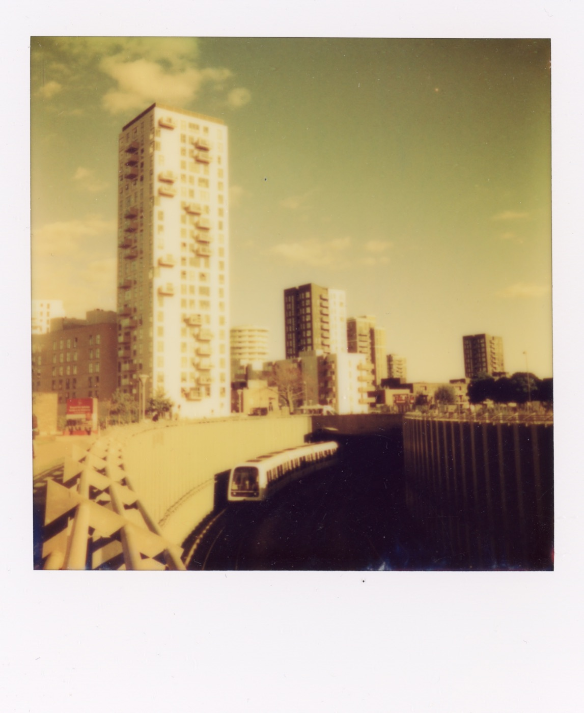
Hvorfor instant foto?
Det hele startede i 1940'erne. Edwin Land fotograferede livets begivenheder, og en dag på stranden gjorde hans 3-årige datter opmærksom på, at hun ville se billederne med det samme. Edwin satte sig for at opfinde en film, der kunne fremkalde sig selv — hurtigt.
Et halvt årti senere etablerede han Polaroid, som i dag nærmest er synonymt med instant foto. Efter årtier i skyggen af den digitale æra er instant foto stærkt på vej tilbage: Den enorme mængde tid spildt bag skærme har ansporet en modreaktion, hvor analoge, taktile oplevelser er blevet populære igen.
Edwin Land opfinder instant-fotografiet og stifter Polaroid.
Over 10 millioner instant-kameraer sælges på et enkelt år.
Polaroid Corporation går konkurs, da digitalkameraet vinder frem.
Instant foto er tilbage — markedet for analoge kameraer vokser igen.
Fra lommeformat til vægstort — her er tre instant-billeder gennem tiden, i indbyrdes skala.
Sådan deltager du
Har du et instant foto klar til deling? Sådan er du med i Instant Ugen.
Tag et billede af dit instant foto med din smartphone, eller scan det for den bedste kvalitet. Filen skal være 2–10 MB, i jpg/jpeg- eller webp-format.
Upload dit billede sammen med dit navn og kontaktinfo på siden "Del dine instants".
Kort version: Du skal være over 18 år, portrætterede skal have givet samtykke, og dit foto må bruges til at promovere Instant Ugen.
Har du flere favoritter? Gennemgå trin 1–3 for hver indsendelse — op til fem bidrag pr. person.
Konkurrencen lukker søndag d. 18. oktober 2026.
Inspiration
16 instants fra Stefan Grage, taget med alt fra Lomomatic Square til hjemmelavede eksperimenter — lagt i blød i øl, kaffe og havvand. Klik for at se hele historien.
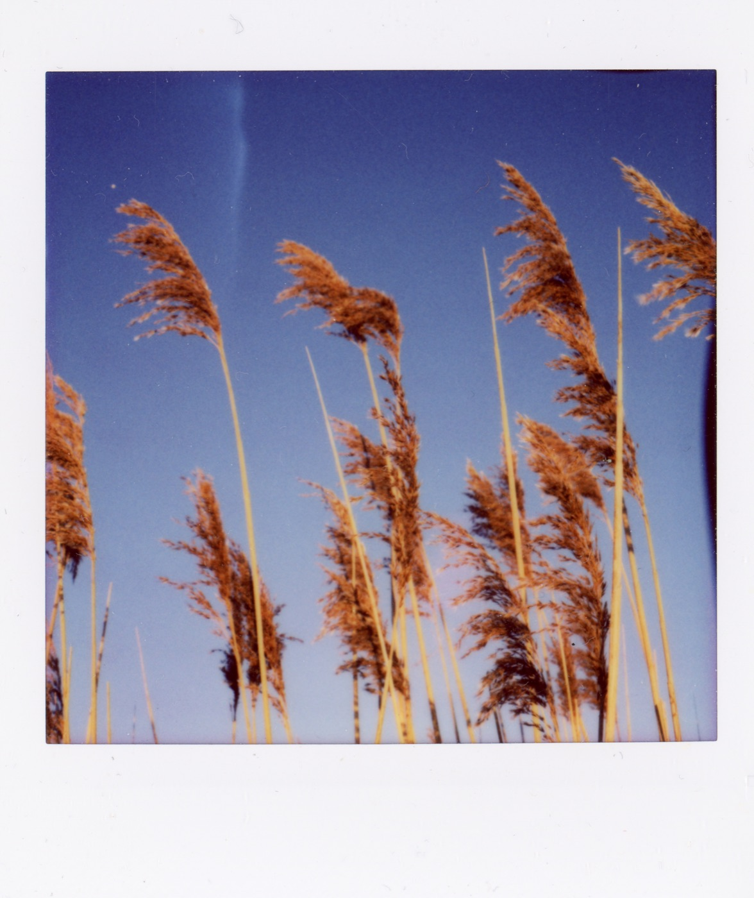
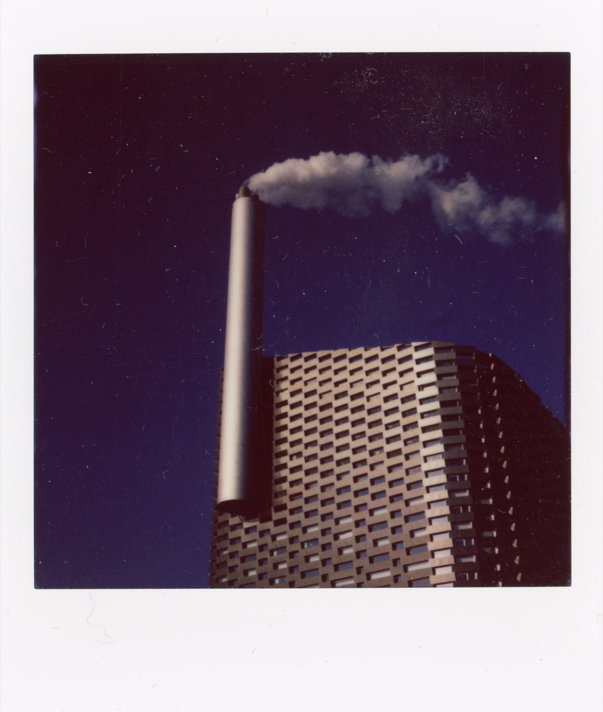
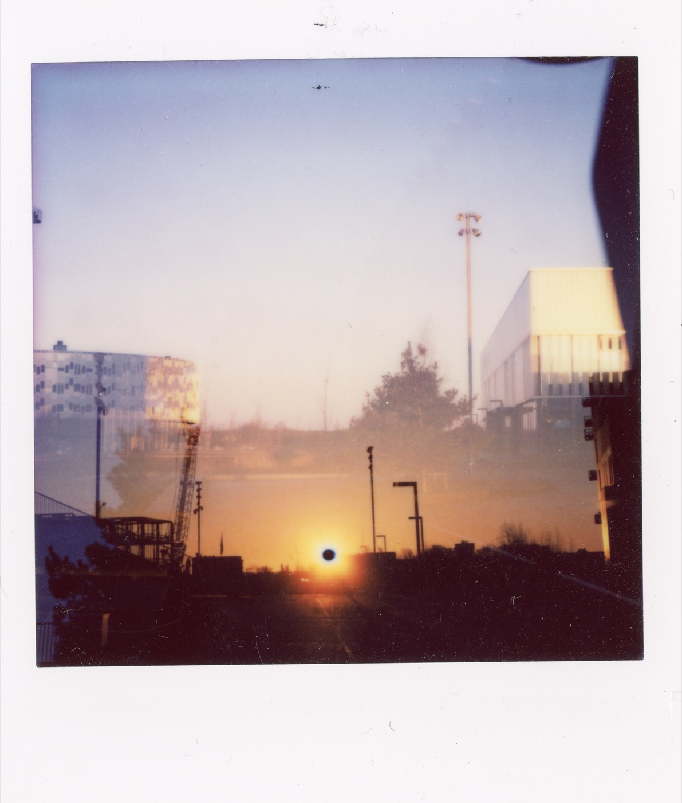
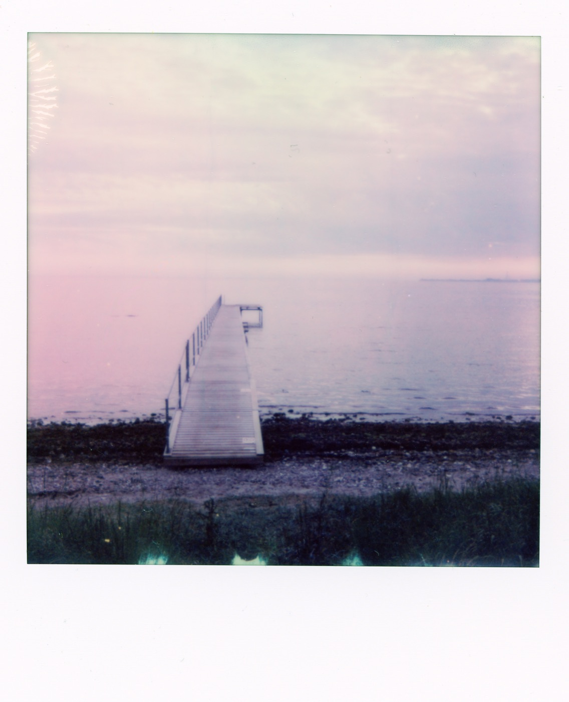
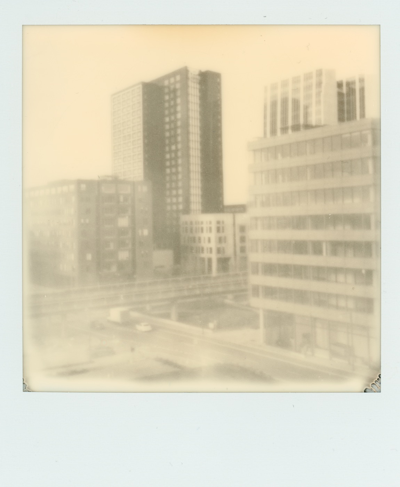
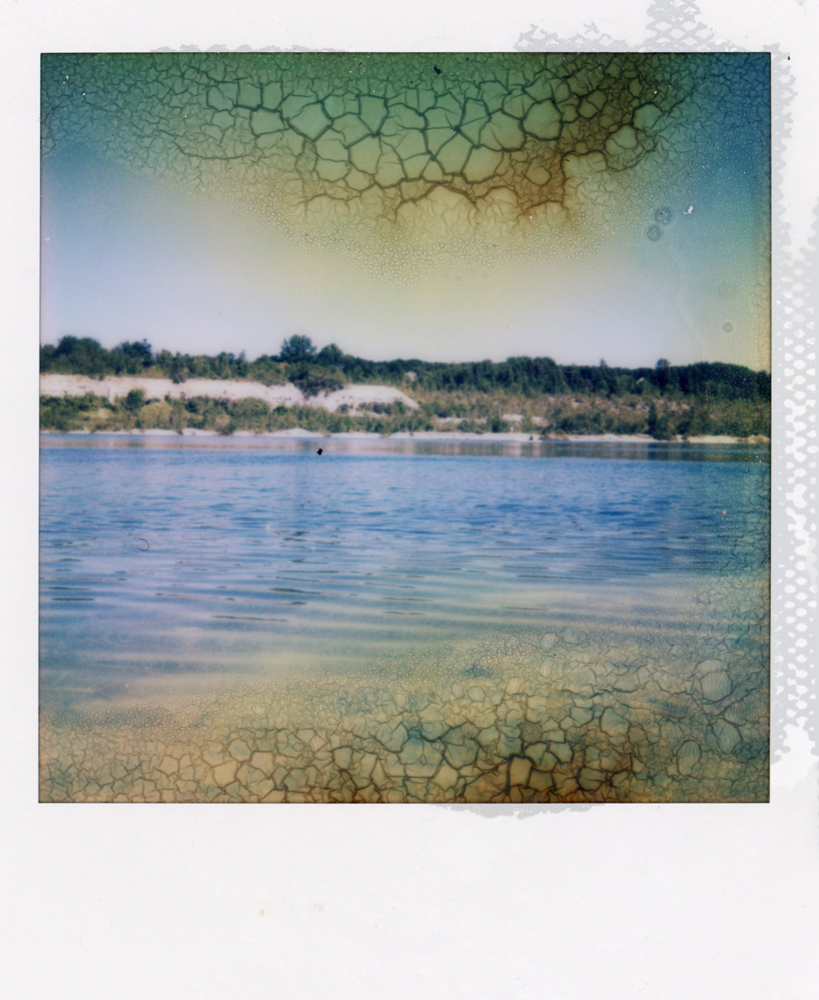
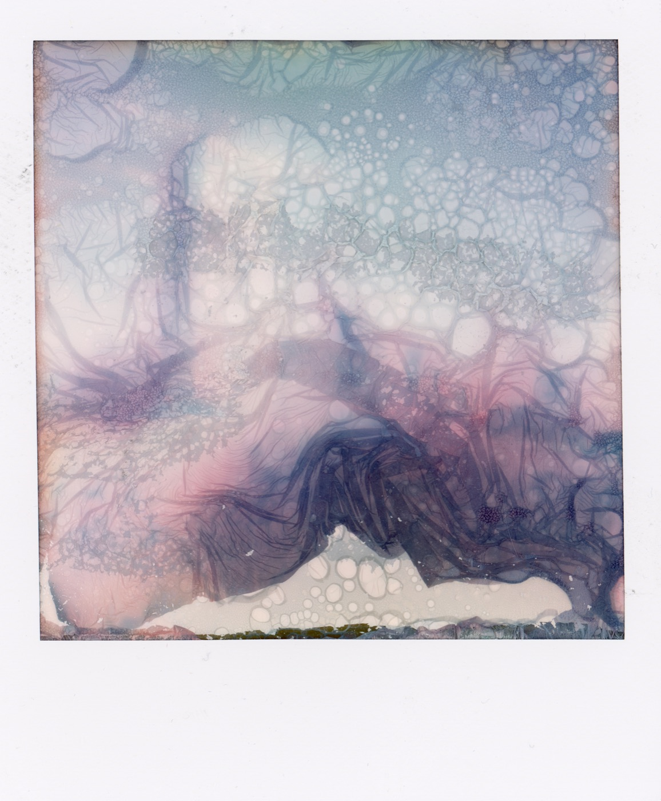
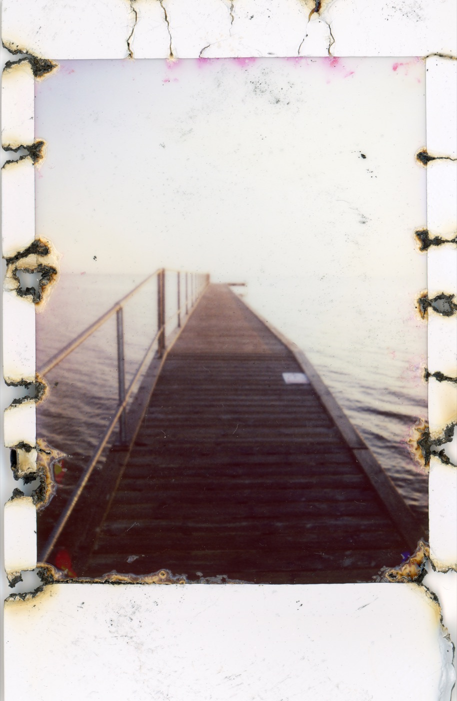
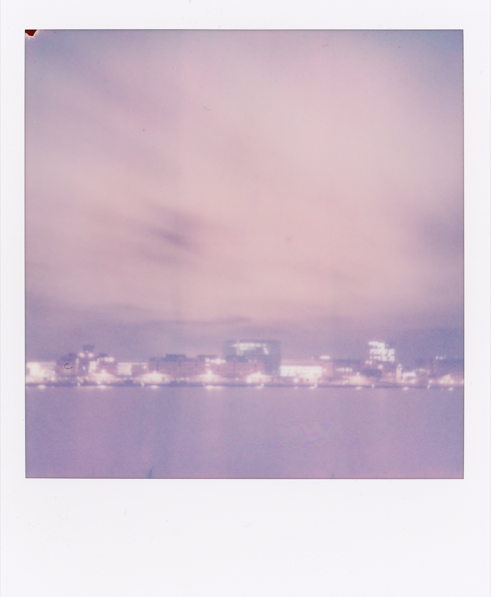
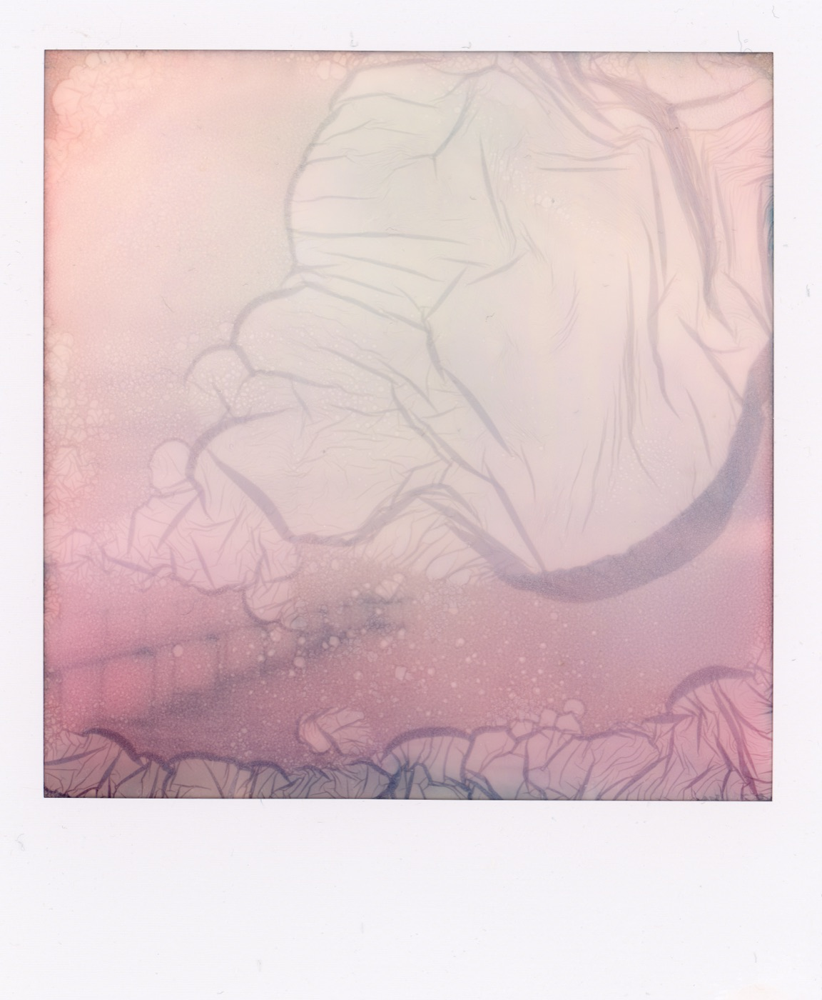

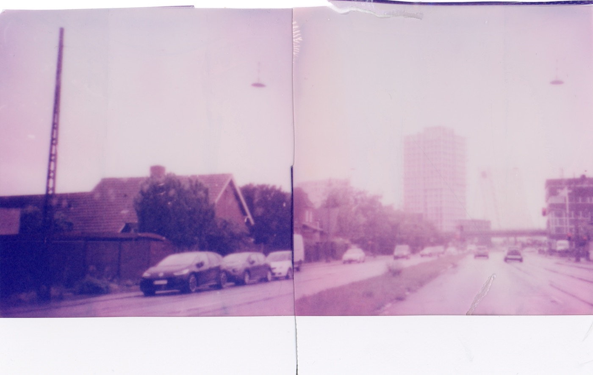
Mere inspiration
Dan Isaac Wallin
Svensk kunstfotograf, der bruger storformatkameraer og vintage polaroidkameraer til sine værker — mange af dem hænger som plakater i hjem verden over.
danisaacwallin.comMette Kelter
Dansk kunstfotograf, der eksperimenterer med bevidst at ødelægge den kemiske proces i instant-fotos. Uforudsigelighed er nøgleordet.
kelterphotography.comMaripol
Fransk kunstner, fotograf og filmproducer. Blev berømt i 1980'erne for at fotografere kendisser med et Polaroid SX-70 — stadig indflydelsesrig i modebranchen.
Læs om MaripolThe Polaroid Collection
En stor samling instant fotos, blandt andet af Ansel Adams, splittet op og solgt på auktion, da Polaroid gik konkurs i 2008. Findes nu i bogform.
Se Polaroidbogen